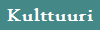
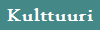
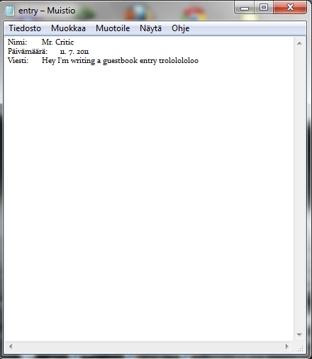
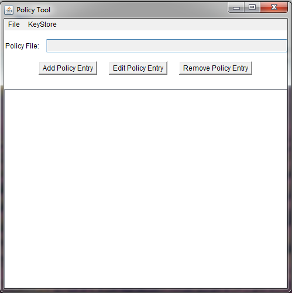
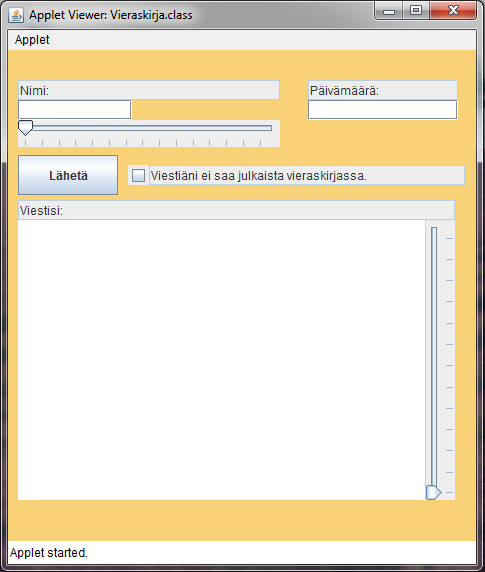

|
Projektit-sivu toimii eräänlaisena kehitysblogina vähän isommille ohjelmille, ja kaikista ohjelmista kirjoitetaan oma pikku tarinansa kuvineen. |
Projekti: The Saga of Steve23. elokuuta 2011 Terve taas! Nyt kun koulut ovat taas lähteneet käyntiin, riittää minullakin aikaa vähän jatkaa koodausta ja kehitellä projekteja. Niinpä julkistan nyt uuden projektin näin elokuisena iltapäivänä. Olen siis jo vähän aikaa kehitellyt ensimmäistä kunnon peliäni, The Saga of Steve:ä(ennen The Adventures of Steve, mutta nimi liian käytetty). Peli sijoittuu kuuluisaan, kulttimaineen saaneeseen Minecraftin maailmaan, ja on tasohyppelypeli. Tarkoituksena on siis, ainakin tällä hetkellä, päästä erilaisten tasojen läpi tappamalla pelistä tuttuja zombieja ja creepereitä sekä muita otuksia, samalla hyppien laatoilla ja keräten piilotetuista arkuista timantteja. Pelin lopullinen tavoita on voittaa pelin tekijä, Notch, eeppisessä taistelussa ja samalla vapauttaa hänen vangitsemat ihmiset(Stevet). Peli tuo uuden, humoristisen oudon näkökulman Minecraftin maailmaan, jossa Notch mukamas olisi vanginnut alkuperäisasukkaat, Stevet eli ihmiset ja estäen heitä pakenemasta vapauttamalla joka yö suuret määrät vartijoita, eli zombieja ja creepereitä. Päivällä vartijoina toimisi farmieläimiä, jotka olisivat enemmänkin viattomia esittäviä vakoojia. Jos joku haluaa tietää mikä Minecraft on, mistä sen saa jne. niin tässä linkki pelin kotisivuille: Minecraft
Aloitin pelin siis jo noin viikko sitten, ja peli onkin edistynyt aika paljon, tässä kuva tämänhetkisestä versiosta:
Pelin ominaisuuksia tällä hetkellä ovat:
30. syyskuuta 2011Terve taas pitkästä aikaa! SoSin(Saga of Steve) osalta on tapahtunut melko paljon edistystä, on ollut huippupäiviä ja päiviä, jolloin on tehnyt mieli paiskata kone seinään. Mutta onneksi ongelmista on päästy yli, ja peli onkin edennyt siihen pisteeseen, että voin alkaa lisätä zombeja. Peli sisältää nyt kunnon vuorokauden vaihtelut, terrainin ja hyvän animaation. Tämä kaikki on saatu aikaan Slick2D -kirjastojen avulla. Peli sisältää myös audiota, mutta se on tehty perus Javalla. Tässä kuva tämänhetkisestä tilanteesta: Graafikkona toimii Vico, eli JavaGalaksin logon suunnittelija. Testaajina toimivat Vicon lisäksi muunmuassa Tipe ja Toivo. Toivo on JavaGalaksin Python -maisteri. |
Projekti: VieraskirjaHUOMIO! Tämä projekti on kekseneräinen eikä sitä jatketa vähään aikaan kohdattujen ongelmien takia. 10. heinäkuuta 2011 Ajattelin tuossa vähän aikaa sitten, että sivusto tarvitsisi jonkun kommunikointivälineen ylläpidon ja kävijöiden välille, tietenkin palautteen lisäksi. Tiedän että sivuston kävijämäärät ovat huonot ja onkin vähän outoa puhua kommunikoinnista olemattoman kanssa, mutta uudet asiat lisäävät aina kiinnostusta... :D Sainkin sitten semmoisen idean, että hei, tehdään vieraskirja! Se on vierailijalle helppo tapa lisätä merkkinsä sivustolle ja ylläpidonkin on kiva lukea lyhyitä viestejä. Vieraskirja on (ainakin luulen) helppo tehdä myös Javalla applettien avulla, mikä ei myöskään vaatisi kömpelöä sähköposti -palautetta. Se, että tekisin sen Javalla poistaisi myös sen luomisen tuskan, etten ole vähään aikaan keksinyt mitään hyvää ohjelmaideaa, kun pelejä en vielä kunnolla osaa tehdä enkä jaksa tehdä tylsiä laskimia. Vieraskirja olisi erityyppinen ohjelma, ja siksi tuore idea itselleni. Nyt kun olen päässyt selittämästä kaikkea turhaa introasiaa, tässä olisi hyvin pelkistetty luonnos ohjelman ulkonäöstä: Nuo ristin näköiset jutut ovat "liuttimia"(en keksi parempaa suomennosta), joilla pystyy muuttamaan eri kenttien kokoa. Kyseisessä ohjelmassa se tarkoittaisi sitä, että nimi, joka saattaa olla vaikka Aatami-Eemeli Ahterinmäenjorpakko(ai että olen luova :D) joka ei mahtuisi oletuskokoiseen kenttään, niin tämä Aatami-Eemeli voisi itse muuttaa kentän kokoa niin että se mahtuisi siihen ollen kokonaan näkyvissä mikä näyttäisi siistimmältä. Sama juttu viestissä, jos joku päättää kirjoittaa siihen novellin, ja haluaa että suurin osa viestistä mahtuu kenttään, hän voisi yksinkertaisesti suurentaa kenttää. Hyvin yksinkertaista. Muutenhan ohjelma on hyvin yksinkertainen. Kirjoitat nimen/nimimerkin, päivämäärän ja itse viestin, valitset haluatko sen näkyvän vieraskirja-sivulla, leikit kolme tuntia liuttimien kanssa ja painat "lähetä"(jota ei näy kuvassa). Tämän jälkeen ohjelma tallentaa viestisi tiedostoon, joka sisältää kaikki merkinnät, ja tämä tiedosto näkyy vieraskirja-sivulla. Siinä se. Sitten minä käyn lukemassa sen ja saatan vaikka vastata siihen! 11. heinäkuuta 2011 Noniin, pääsin tänään jo sitten jatkamaan tuota projektia, ja se edistyikin todella hyvin(ehkä liiankin hyvin?)! Sain tehtyä peruselementit, jotka olivat siis tekstikentät nimelle, päivämäärälle ja viestille, sitten tein ne liuttimet, jotka oli siis nimelle ja viestille, tein myös "lähetä" -napin ja "julkaisurastittimen". Taustavärin laitoin oranssihtavaksi, ja yritin järjestellä elementtejä, mutta koska tämä on appletti, niin siinä koitui ongelmia ja hoidan sen myöhemmin. Kuitenkin, tässä kuva tämänhetkisestä ohjelmasta: 
Se ei ehkä ole hieno, mutta kyllä siitä vielä hyvä tulee :D Sain myös ihme kyllä tuon lähetä -napin toimimaan, eli se tallentaa kaikkien tekstikenttien sisällöt "entry" -tiedostoon, kun sitä painetaan. Tässä kuva lopputuloksesta, kun eräs henkilö kokeili beta -vaiheen vieraskirjaa: Pääsin tänään omasta mielestäni aika hyvään vaiheeseen, katsotaan jaksanko jatkaa vielä tänään vai vasta huomenna... saa nähdä :) 06. elokuuta 2011 Terve taas kaikille, en olekaan vähään aikaan päivitellyt sivuja erityisemmin, kun on ollut muita kiireitä, mutta nyt koulujen taas alkaessa, ironista kyllä, luulen pystyväni keskittymään taas paremmin ohjelmointiin ja sivujen tekoon. Nyt siis pikku päivitystä missä jamassa projekti on. Siis, sain sen tuolloin aikoinaan heinäkuun puolivälissä pääasiassa valmiiksi, mutta testatessani ohjelmaa selaimessa, byrokratia tuli vastaan. Nimittäin, jok'ikinen appletti jolla halutaan kajota tiedostoihin tai muihin appletin ulkopuolisiin juttuihin, tarvitaan lupa käyttäjältä eli sinulta. Ne jotka ovat pelaanneet aikoinaan esim RuneScapea(lol), tietävät tästä, sillä kyseinen pelikin on vain appletti. Noh, aloin sitten tutkia miten käyttäjä voi antaa luvat ohjelmalle. Se tapahtuu policytoolilla, joka löytyy kirjoittamalla komentoriville policytool. Policytoolilla voidaan antaa joko kaikille tai vain tietyille ohjelmille lupa kirjoittaa, lukea, poistaa tiedostoja jne... Kuitenkin jos käytän policytoolia, kaksi juttua on pielessä: Ensinnäkin, kaikkien käyttäjien pitäisi tehdä oma "policynsä", mikä on sula mahdottomuus puhuttaessa massoista. Toisekseen, se ei yksinkertaisesti toimi. :D Aina kun teen uuden policyn, ja vaikka kuinka tarkasti sen tekisin, se ei vaan onnistu, sillä ohjelma jatkuvasti herjaa siitä ettei se pääse käsiksi tiedostoihin. Mutta uskon että vielä joku päivä löydän tähän hyvän ratkaisun. Lopuksi vielä pari kuvaa itse ohjelmasta: 
Ohjelman päävalikko jossa käyttäjä valitsee haluaako hän kirjoittaa vai lukea merkintöjä Tältä siis näyttää merkinnän kirjoitus -puoli. Lukupuoli on vielä työn alla, kuvia kyllä tulossa! :) 8. elokuuta 2011 Valitettavasti joudun nyt kyllä jättämään tämän projektin kesken, sillä tutkittuani noita sertifikaatteja, sain sen luvansaannin lopulta toimimaan, mutta seuraava este, eli tiedostojen kirjoitus suoraan palvelimelle, olisikin jo paljon vaikeampi voittaa, ja siihen tarvittaisiin CGI -skriptejä, mitä en ainakaan vielä ole valmis opettelemaan. Siispä jätämme tämän projektin hamaan tulevaisuuteen odottamaan. Päivitän projekti-sivua sitä mukaa kun teen ohjelmaa, julkaisen myös screenshotteja! *wink wink* |
© Aapo Kiiso 2011